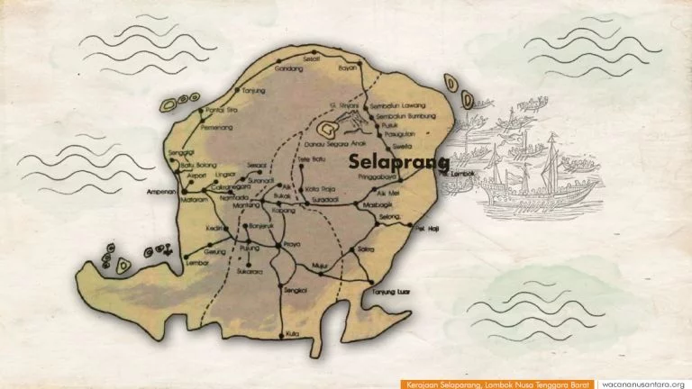

Sejarah Lombok
Kerajaan Selaparang adalah salah satu kerajaan yang pernah ada di Pulau Lombok. Pusat kerajaan ini pada masa lampau berada di Selaparang (sering pula diucapkan dengan Seleparang), yang saat ini kurang lebih lebih berada di Desa Selaparang, Kecamatan Swela, Kabupaten Lombok Timur. Tidak diketahui secara pasti tentang awal berdirinya Kerajaan Selaparang. Namun, terdapat beberapa sumber yang cukup dapat dipercaya. Salah satunya adalah kisah yang tercatat di dalam daun Lontar yang menyebutkan bahwa berdirinya Kerajaan Selaparang tidak akan pernah bisa dilepaskan dari sejarah masuknya atau proses penyebaran Agama Islam di Pulau Lombok.
Disebutkan di dalam daun Lontar tersebut bahwa Agama Islam pertama kali dibawa dan disebarkan oleh seorang Mubaligh dari Kota Bagdad, Iraq. Mubaligh tersebut bernama AsySyaikh As-Sayyid Nūrurrasyīd Ibnu Hajar Al-Haytami atau yang biasa dikenal oleh Masyarakat Lombok dengan sebutan Ghaus Abdurrazzāq. Beliau selain sebagai penyebar Agama Islam, dipercaya juga yang menurunkan Sulthan-Sulthan dari Kerajaan-Kerajaan yang ada di pulau Lombok.
Beliau pertama kalinya datang ke pulau Lombok tepatnya di Kabupaten Lombok Utara yang disebut dengan Bayan sekitar tahun 600-an Hijriyah atau abad ke-13 M (antara tahun 1201 hingga 1300 M). Beliau menetap dan berda’wah di sana, kemudian menikah sehingga lahirlah tiga orang anak dari Istri pertama, yakni : (1). Sayyid Umar, yang menjadi Datu Kerajaan Pujut, Kabupaten Lombok Tengah (2). Sayyid Amir, yang menjadi Datu Kerajaan Pejanggik, Kabupaten Lombok Tengah dan (3). Syarifah Qomariah atau yang lebih terkenal dengan sebutan Dewi Anjani.
Kemudian Ghaus ‘Abdurrazzāq menikah dengan Istri kedua yang merupakan seorang Putri dari Kerajaan Sasak sehingga lahirlah dua orang anak dari Istri kedua, yakni : Seorang Putra bernama Sayyid Zulqarnain (dikenal dengan sebutan Syaikh ‘Abdurrahman) atau disebut pula dengan Ghaos ‘Abdurrahman, dan Seorang Putri bernama Syarifah Lathifah yang dijuluki dengan Denda Rabi’ah. Sayyid Zulqarnain inilah yang kemudian mendirikan Kerajaan Selaparang sekaligus pula sebagai Datu (Raja) pertama dengan gelar Datu Selaparang atau Sulthan Rinjani.